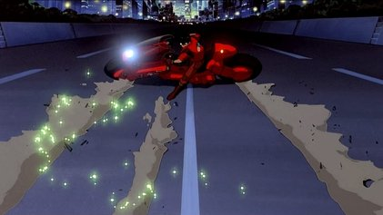

Akira, Frame (the Motorbike Slide)
Katsuhiro Otomo · 1988 · Animated film, colour (frame)
In copyright. Look and learn: shown for study, not for download.
This frame is from the scene in which Kaneda slides his motorbike sideways to a stop, leaving a trail of smoke and electric sparks. The dialogue of Akira was recorded before the animation was made, so that the characters' lips could be drawn to match it, a first for an anime production. The production budget was 700 million yen. The term Akira slide was first recorded in 2009.